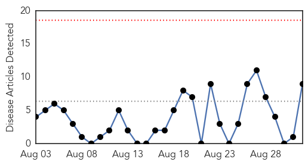

30 Day Trends
Web: 0 alerts, 0 warnings
Twitter: 4 alerts, 0 warnings
Top Articles:
- 1.000
- 19 new cases of dengue fever reported
- 0.998
- Will global warming make Japan more vulnerable to tropical diseases? ‹ Japan Today
- 0.995
- Japan Finds 19 More Dengue Fever Cases, Public Broadcaster Says
- 0.992
- 'Dengue a 'multi-organ' threat'
- 0.990
- Japan Confirms 22 People Affected By Dengue Fever Outbreak
- 0.958
- Japan confirms more dengue infections officials
- 0.847
- Panic in Village Over Fever, 18 Land in Hosp
- 0.667
- Genetically modified Aedes on a mission - Health
- 0.532
- Lecture on dengue
Top Tweets:
-
No tweets found for Sep 01, 2014
Web/News Articles
Tweets

Article Locations

Article Confidences